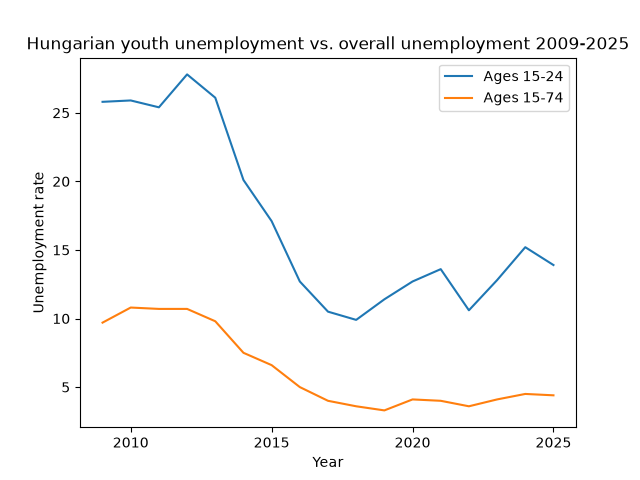
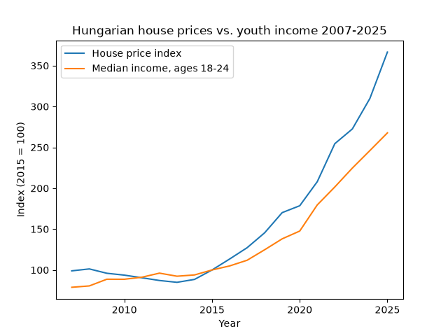
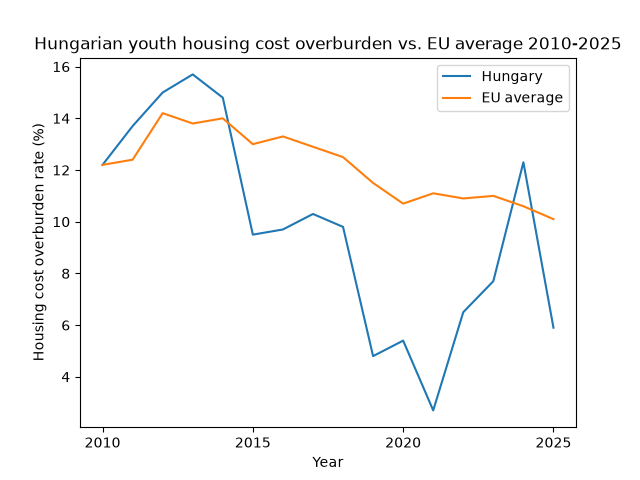

This report looks at what the Hungarian economy currently looks like for young people, using public data from Eurostat. It covers youth unemployment, house prices versus youth income, and housing cost overburden, comparing Hungary to the wider EU where relevant.
Note: if the charts below don't appear, this is a known Safari limitation with local files, not a broken report - try opening this page in Chrome or Firefox instead.

Compared to the overall unemployment rate in Hungary, the youth unemployment rate is constantly higher, however for both values we can observe a substantial drop onwards from 2012, due to a 150% increase in public-works program jobs. This drop continued for many reasons related to the private sector (labor shortages, EU funds, automotive-sector investment). After both rates leveled off near a structural floor, we can still observe spikes, due to COVID and Hungary’s car industry crisis, which had an especially strong effect on youth unemployment, before falling back again. While pre-2012 the youth unemployment rate sat at approximately 250% of the overall unemployment rate, after the decline the rate increased to over 300%. So while both values improved, the youth unemployment rate compared to the overall rate actually worsened.

2007 to 2014 the youth median income was increasing slightly overall, compared to house prices, which were on a decline. The turning point for house prices was in 2013, when a sharp increase began with the youth median income also beginning to grow soon after. While both skyrocketed onward from 2013, the house prices increased over 330%, while the median income only went up by around 190%. This widening gap suggests that it is becoming increasingly difficult to buy or even mortgage a house as a young adult and there is no reason to assume it will be closing anytime soon.

Hungary's youth housing cost overburden is far more volatile than the EU average, dropping after new policies or programs are introduced (utility price decrease program, COVID loan moratorium), but increasing once again after their effects fade. The instability shows especially during the 2021-2024 period, when the housing cost overburden in Hungary spiked, due to extreme inflation (peaking at an annual rate of 25%) and a partial reversal of the utility price cuts, before dropping back down as inflation fell and the CSOK plus housing subsidy was introduced. Compared to the EU average showing a steady downward trend, the youth housing cost overburden of Hungary looks drastically unpredictable and policy-dependent, which is a real concern for this age group, as they have little savings to fall back on.
In conclusion, these findings indicate that while the whole of the Hungarian economy is improving, the economic position of the Hungarian youth does not match that rate of improvement. While the unemployment rates are lower and the median income is increasing, they are relatively worse off in the labour market and still have affordability problems due to prices outpacing income growth. They also have an increasingly difficult time when affording housing and every help they get with it is temporary, policy-dependent and generally unstable unlike the EU average. Overall, today the youth of Hungary are lagging behind others and they have a relatively hard path towards adulthood and full independence.